Chastain
Horse Park
Grounded in the dual nature of Chastain Horse Park as both a therapeutic and competitive space, this identity system organizes multiple programs under one cohesive brand. A modular icon and ribbon system differentiates programs while maintaining clarity, consistency, and accessibility across print and environmental applications.
As Lead Brand Designer for the SCAD SERVE collaboration, I built the full identity — logo, sub-branding, color-coded wayfinding, icons, and interpretive signage — grounded in on-site research. Presented at SCAD FASH 2024.
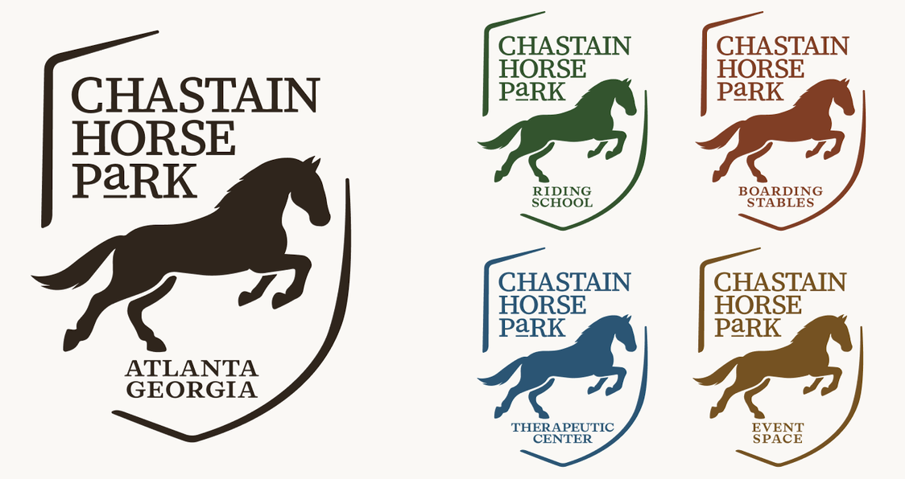
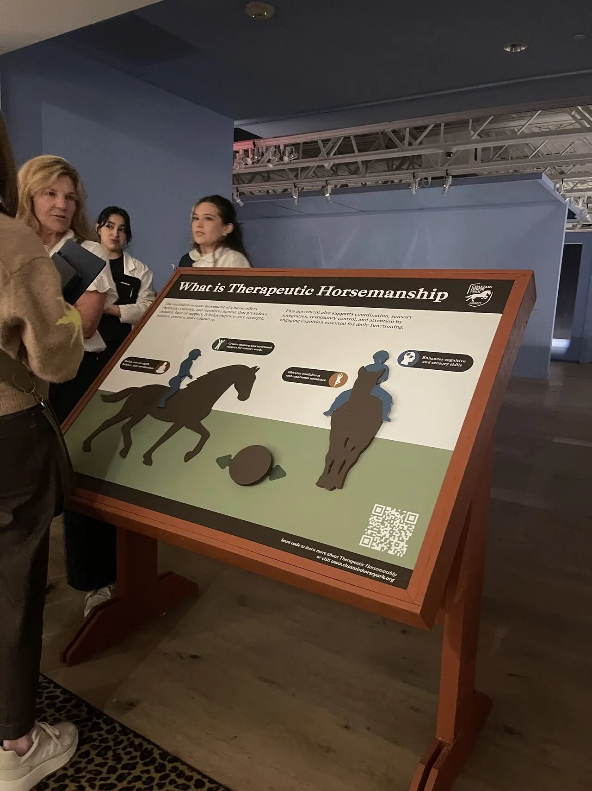
Therapeutic Horsemanship sign · SCAD FASH 2024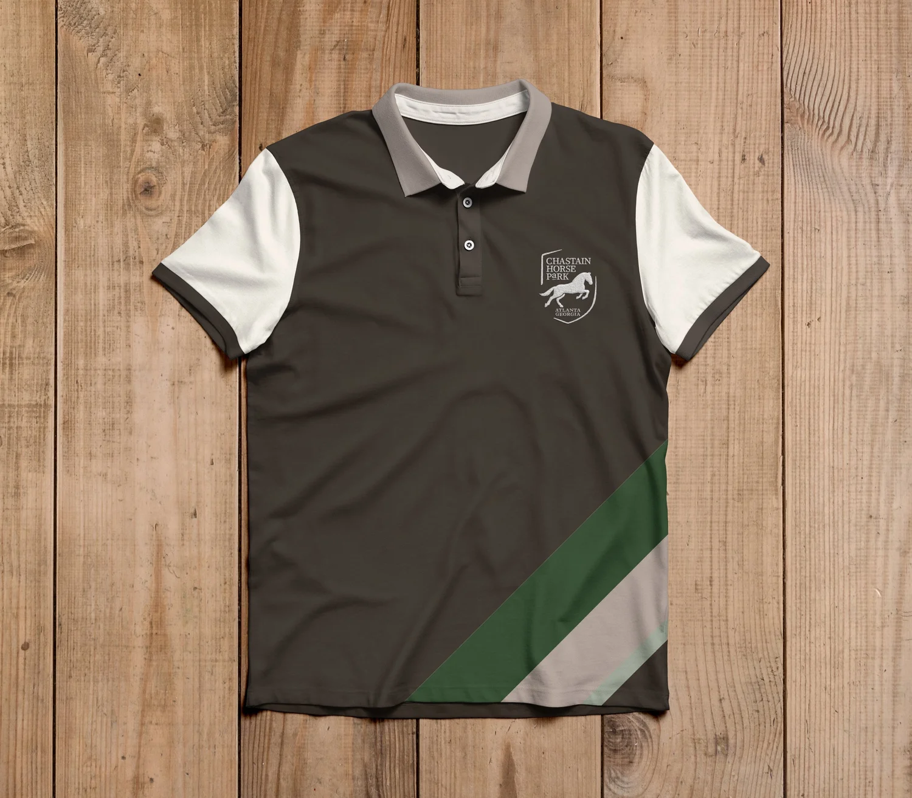
Polo shirt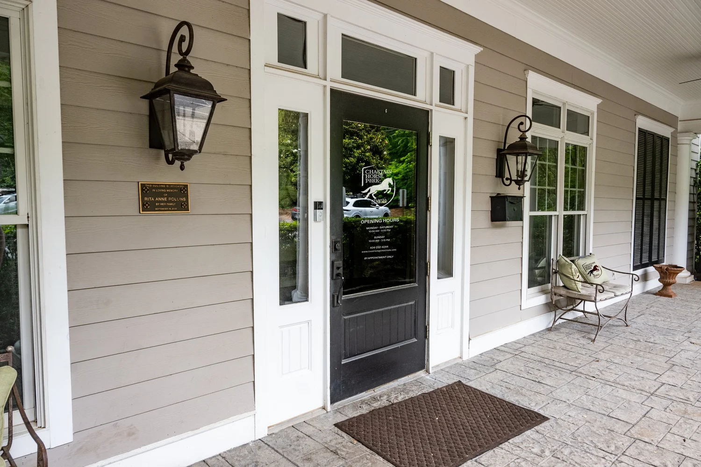
Signage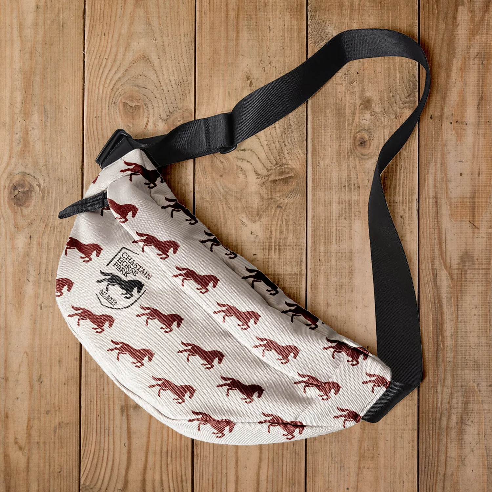
Merchandise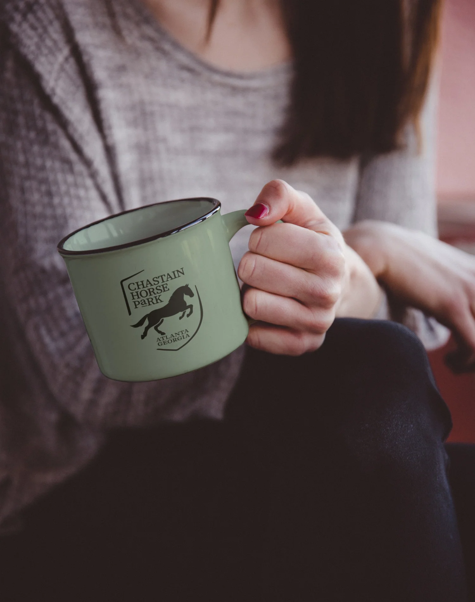
Mug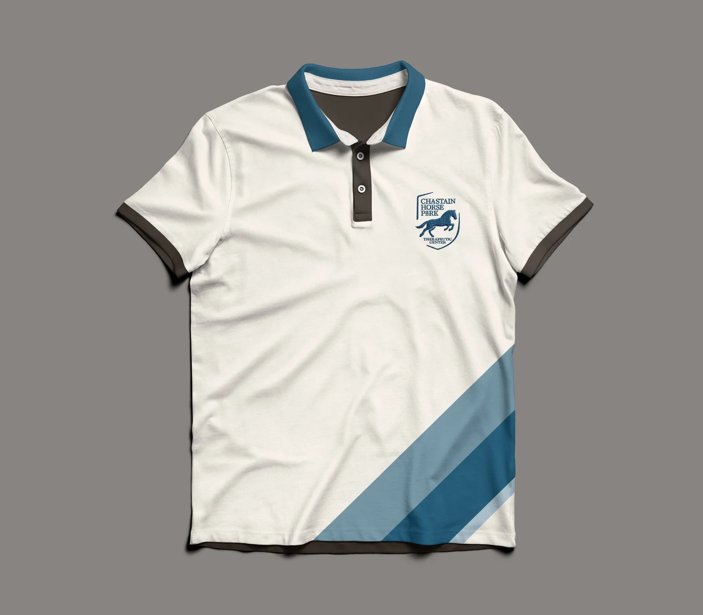
Therapy variant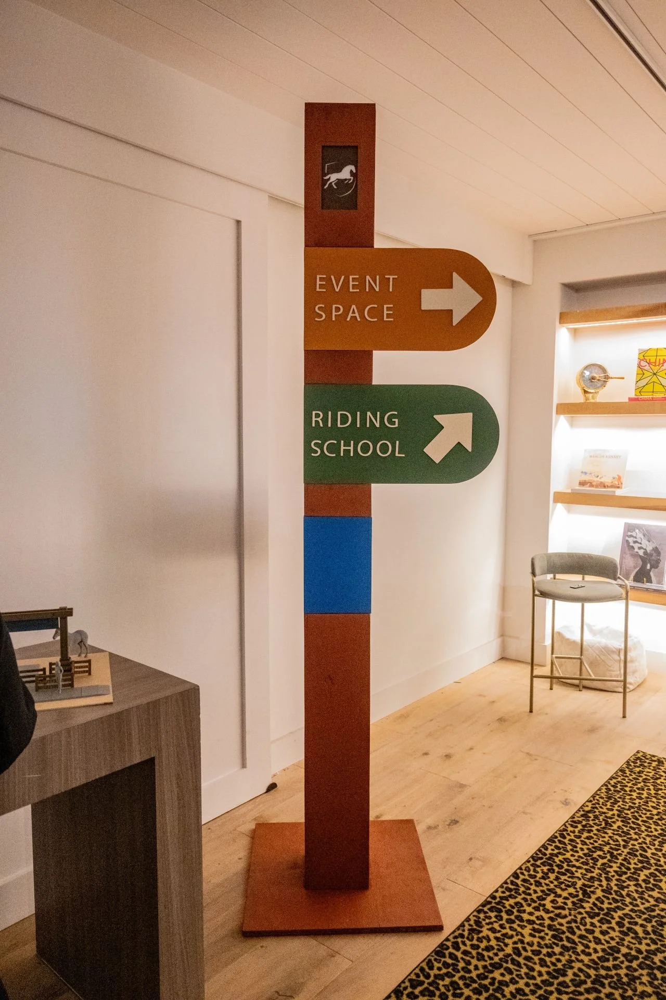
Identity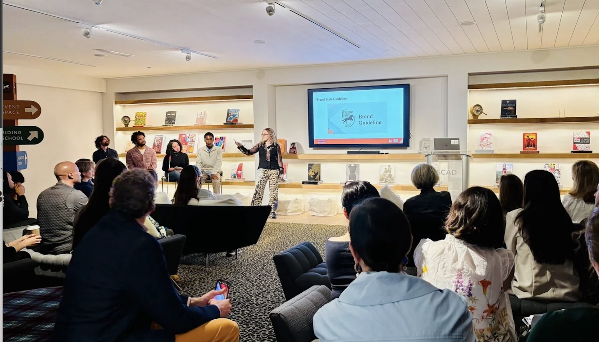
SCAD FASH 2024 presentation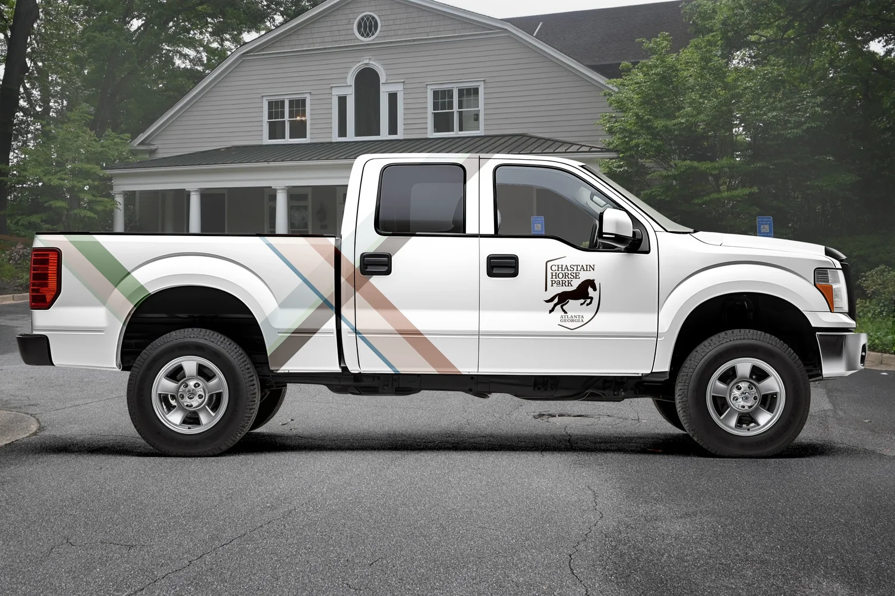
Vehicle wrap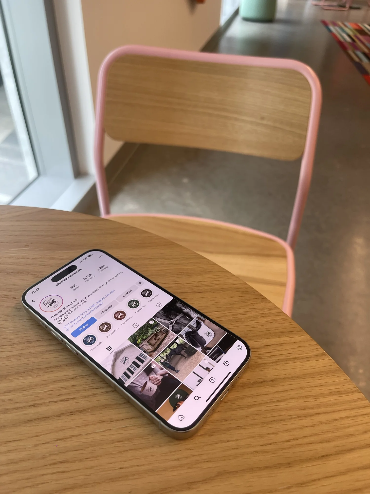
Social mediaBuilt for
two worlds
at once.
The challenge was designing one brand that could hold therapeutic riding programs and competitive equestrian events without feeling split. The ribbon and icon system solved this — each program gets its own color while sharing the same visual language.
Working directly with the client through SCAD SERVE gave the project real stakes. Presented at SCAD FASH 2024.